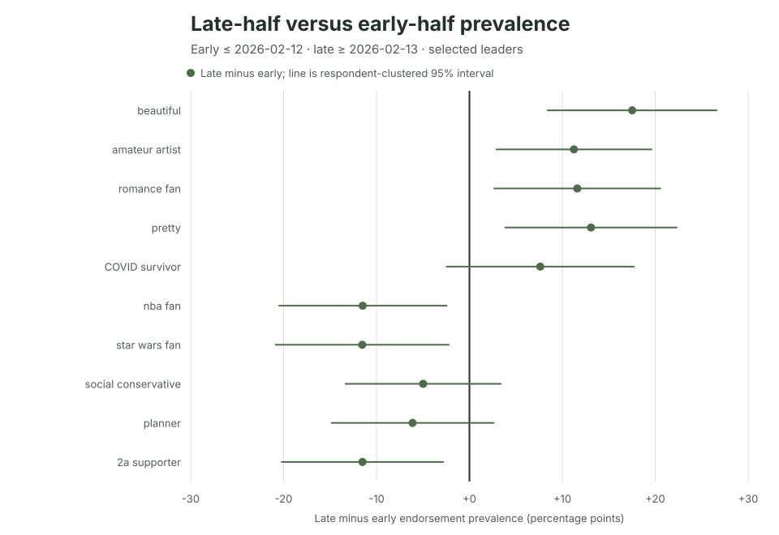

Ipseity Daily Pulse · 2026-09-21
A trend without the straight-line assumption
A two-period contrast checks trend direction without requiring a straight-line path.
By Ceetown · 3 minute read
A straight line is not the only way to check whether an identity signifier is changing.
We split Ipseity Daily's current observation window into two calendar
halves and compared endorsement prevalence after February 12, 2026, with
prevalence on or before that date. All 20 signifiers selected as the
most extreme linear trends kept the same direction in this simpler
comparison. For beautiful, endorsement was 33.2% in the
early half and 50.7% in the late half, a 17.5-percentage-point
difference (respondent-clustered 95% interval 8.4 to 26.7 points).
That agreement is a robustness check, not proof of population change. The signifiers were selected from 704 linear trends, no primary trend survived either multiplicity screen, and different respondents contributed over time. The useful result is narrower: these selected directions are not artifacts of fitting one straight line through the whole period.
Source: Ipseity Daily download page

Evidence note
The values use canonical microdata through 2026-09-20, retrieved at
2026-09-21T10:06:18Z. The common split is the full dataset window's
calendar midpoint: the early period is 2025-07-08 through 2026-02-12,
and the late period is 2026-02-13 through 2026-09-20. The contrast is
unweighted and does not adjust for changing sample composition, shorter
reversals, or selection of extreme linear slopes. Full estimates and
limitations are recorded in CURRENT-FINDINGS.md and outputs/leader-early-late-sensitivity.csv.
Snapshot note: This dated entry and figure are preserved from the stated check. Links to the cumulative report and aggregate tables may show newer data.